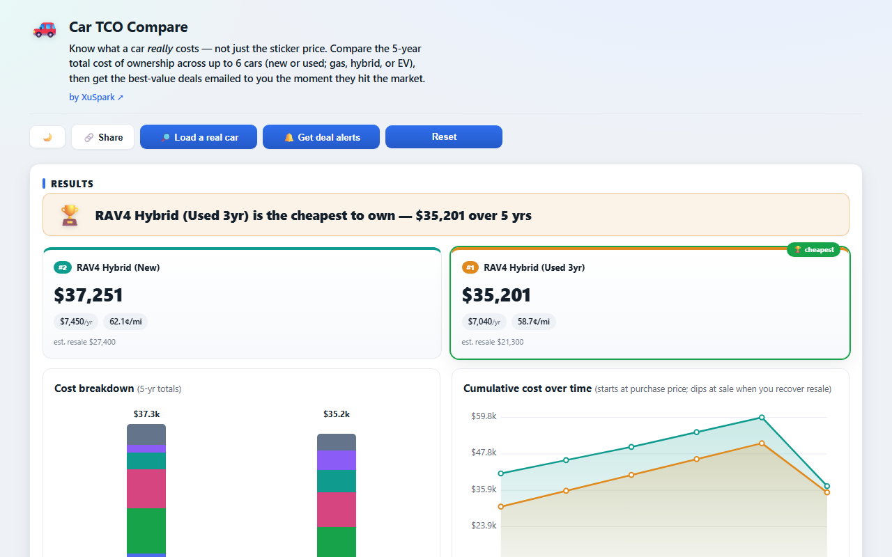
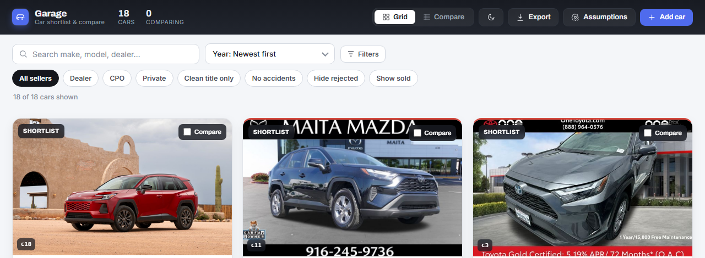
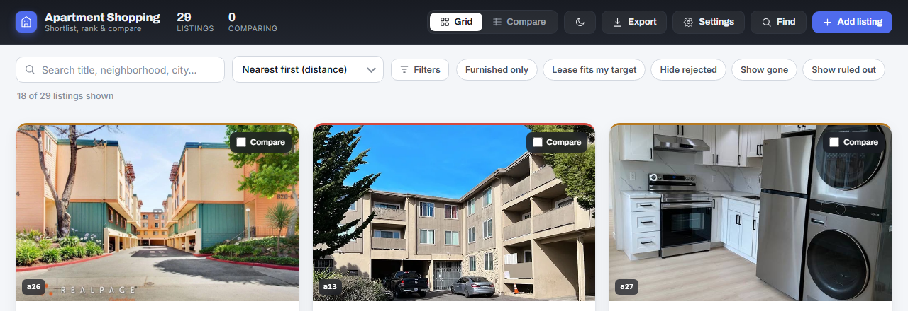

I build consumer products on my own from end to end: the product decisions, the data model, the backend, the deploy pipeline, and the monetization call, including when not to launch one. In 2026 alone I shipped three live web apps; one runs its own email backend on scheduled jobs. I came to this from data science and now build with AI coding agents daily, with the tests and gates that make that trustworthy.
Shipped products

Figures shown are illustrative estimates; the app states its cost assumptions are illustrative. Listings: Auto.dev snapshot.
Car TCO Compare live
A free calculator that compares up to six cars on five-year total cost of ownership, loads real listings, and emails TCO-ranked deal alerts.
Car buyers anchor on sticker price or monthly payment, but total cost of ownership decides the real bill. Existing TCO tools are black boxes locked to specific trims; they will not put arbitrary cars side by side under your own holding period, mileage and financing.
What I built
A no-sign-up static app: 1 to 6 new or used cars (gas, hybrid, EV) on a fully editable 7-line TCO, answer-first output with a winner banner, a stacked cost breakdown per car and a cumulative-cost chart. "Load a real car" pulls from a bundled snapshot of 1,420 real 2020-and-newer listings (dated 2026-06-22, refreshed annually). A "Deal Alerts" email backend watches new listings and sends a TCO-ranked digest.
How
React, TypeScript and Vite on GitHub Pages. The calculation engine is a pure function with no DOM or I/O imports, reused in a second app. Listings are an API snapshot shipped with the build and refreshed by a scheduled GitHub Action. The alerts backend is Supabase Postgres with row-level security, a Deno Edge Function, transactional email through Resend with idempotent double opt-in, on a daily GitHub Actions cron. Built with AI coding agents under my direction; the orchestrated crew process came with the next two apps. Everything runs on free tiers.
Where it stands
Live at $0/month, pre-revenue. A paid alerts tier is designed but deliberately not launched: it would need a commercial listings-data license first, and I would rather show that blocker than hide it. Next: per-rate estimate labels in the UI and real cost data to replace the illustrative segment rates.
Kept honest by
42 Vitest tests on the engine, depreciation curve, vehicle resolver and listings loader; the formulas are written down in docs/design/tco-model.md.
The app's footer states that its cost assumptions are illustrative segment-level estimates; resale and registration are marked est. The value is the relative ranking under your own assumptions.
The alerts backend keeps a public run log and its pre-ship review findings; the daily cron had 12 consecutive green runs as of 2026-09-30.
Listings are a best-effort snapshot from the Auto.dev API (free tier); verify before buying.
Source is public under the PolyForm Noncommercial license.

Garage live
A used-car shortlist that raises risk flags, tracks features honestly, and ranks candidates by estimated cost of ownership instead of sticker price.
Shopping for a used hybrid SUV with a deadline, I had listings scattered across five sites with inconsistent wording. Sticker price is a poor way to rank near-identical cars: the cheaper one can depreciate faster, carry rental-fleet mileage, or hide an accident.
What I built
A private, static board for every candidate: photo, price and estimated out-the-door, an estimated N-year cost to own, a ten-feature row that is explicitly has / confirmed absent / unknown, and automatic flags such as branded title, accidents, prior theft, high miles per year, no service records and over-market price. Filter, sort by cost of ownership, compare side by side, and push the shortlist straight to a Google Sheet. Listings were captured from screenshots with an AI assistant into a typed seed file; the app itself does no scraping.
How
React, TypeScript and Vite with only two runtime dependencies. A frozen types contract, a pure domain engine with no React imports, and a thin UI that only renders. The TCO engine is vendored from Car TCO Compare with a written decision record on why. Google Sheets sync goes through an Apps Script web app with no server, no OAuth client and no secret in the bundle. First app built with my orchestrated agent crew: a product-manager session, a build brief I confirm, nine role agents, approval gates I sign off on.
Where it stands
Built for my own 18-car search. Single-user by design, with state in the browser. Next: package the shared TCO engine instead of vendoring it.
Kept honest by
211 Vitest tests lock the flag rules, derived math, the Sheets export matrix and the TCO engine; a type-check gates every build.
Cost figures are estimates and labelled Est. in the app; the value is in the relative ranking.

Apartment Shopping live
A rental shortlist that geocodes every listing, flags possible scams and lease fit, ranks by distance from the places that matter, and tracks each one through a status pipeline.
Hunting a short-term Bay Area lease across Zillow, Craigslist, Apartments.com and building sites, browser tabs and spreadsheets lost context: no photos, no distance to what mattered, no record of what had been contacted, toured or ruled out.
What I built
One board for candidates. Each listing shows rent against an estimated market comp, beds, baths, square feet, availability and lease term, with flags for possible scam, income restriction, lease fit against the goal, over- or under-market rent and stale listings. Red flags always sort first. Distance from a chosen anchor is resolved offline for 429 Bay Area ZIPs and 106 neighborhoods. Compare side by side, export to Google Sheets. Listings are hand-curated into a seed file; there is no automated import.
How
The same architecture as Garage, matured: all domain logic (flags, distance, geocoding, filters, export) is pure functions with an injectable clock. Persistence is a committed seed catalog plus a localStorage overlay with migration-safe stable ids, so retiring a listing never wipes the user's notes. Deployed by GitHub Actions to Pages. Built with the same agent crew and the same approval gates.
Where it stands
Built for my own search. Single-user by design. Next: component tests (the suite covers the engine, not the UI) and driving-time distance instead of straight-line.
Kept honest by
300 Vitest tests across the flag, distance, derive, format and export modules, plus a written test report and review findings.
Scam and income-restriction flags are set by hand at capture time, not detected automatically; market comps are my estimates; distance is straight-line.
How I build
All three apps were built with AI coding agents, and from Garage onward through an orchestrated crew I designed. The main session acts as product manager (intake, a build brief I confirm, acceptance, a final report) and spawns nine role agents in dependency order: research, design, tech lead, frontend, backend, data, QA, review and release, with approval gates I sign off on between them. Garage and Apartment Shopping carry their run logs, decision records, state files and pre-ship reviews in the repo; Car TCO Compare's alerts backend has its run log and review findings.
What makes the output trustworthy is ordinary engineering, enforced on the agents: a frozen types contract, a pure domain engine with no UI imports, hundreds of unit tests, a type-check gating every build, decision records for the trade-offs, and a local ship gate I run before deploying: tests, a type-check build, DOM checks, and a check that the live URL serves the new build. The deploy workflows themselves only build and publish. The review stage earns its place: the pre-ship review of the alerts backend found that an unpaged database read would silently drop matches past 1,000 rows, and that an email send and its state write were not atomic. Those findings are public in the repo.
Around that I run a small learning system: a dependency-free ledger turns every coding session into a redacted journal, a daily pass distills candidate learnings, and a weekly review promotes the ones worth keeping into the rules the agents follow next time. A personal dashboard reads all of it and briefs each new session on what needs attention. Those tools are private repos; I am happy to walk through them.
Tests: 42 (Car TCO Compare), 211 (Garage), 300 (Apartment Shopping), all on pure-function engines.
Zero-backend by default: static hosting, snapshot data, Apps Script and Supabase only where a server is unavoidable.
Agents never touch secrets, spending or publishing unsupervised: those steps sit behind human approval gates, and no credential is ever committed, with a scanner on every commit and push.
Every estimate is labelled; nothing on this page claims users, revenue or impact that was not measured.
This page went through the same local gate: no tracking, light and dark, no console errors, every link checked.
Skills
Product and data
Turning a fuzzy decision into a clear number: total-cost-of-ownership and pricing models
Risk and quality flags with explicit priority, so the red ones always surface first
Market comps, geospatial ranking, offline reference data
Experimentation mindset: measure, label estimates, never overclaim
Building and shipping
Web apps and sites, end to end: idea, PRD, data model, app, backend, live URL
Architecture calls: pure tested engines separate from UI, zero-backend by default
Serverless backends when unavoidable: database with row-level security, transactional email, scheduled jobs
Deployment and operations on free tiers; a ship gate before every release
Reading, reviewing and rejecting the code the agents write
Working with AI agents
Claude Code plugins and skills
Multi-agent orchestration with human approval gates
What the products run on: TypeScript, React and Vite with Vitest on the front end; Supabase, Resend and GitHub Actions behind the alerts; GitHub Pages for hosting.
History
Products and tooling 2026
The three live apps above, plus the private build, learning and dashboard tooling described in How I build.
AI agents and LLM apps
Learning in public: experiments, not products.
ai-agent-projectPython — ML and reinforcement-learning experiments (a DQN Lunar Lander, a config-driven ML pipeline, an agent chat app) built with an AI coding agent.
ai_projectsPython — Five Python mini-projects from an AI-builder course: crypto price plots, a CVPR paper scraper, GUI automation, image analysis.
chatgpt_appsPython — Early-2023 Streamlit experiment: ChatGPT answers grounded in Google search results, plus a scheduled news-summary emailer.
Finance experiments
stock_options_tradingJupyter Notebook — Python classes and a notebook that model multi-leg option strategies and plot their payoff curves.
Data science
Earlier data-science work. Notebooks of their time; the ML credential lives here, not in the 2026 apps, which are deterministic decision models.
lending_club_loans_default_predictionJupyter Notebook — Loan-default classifier on about 890K Lending Club records: cleaning, feature selection, an sklearn and XGBoost pipeline. Reworked in 2023.
amazon_echo_customer_review_insightsJupyter Notebook — Clustering and LDA topic modeling of about 10K Amazon Echo reviews to find what drives positive and negative experiences.
ratemyprofessorsdotcom_rating_predictionJupyter Notebook — Scraped RateMyProfessors for three universities and fit a regression on what drives professor ratings.